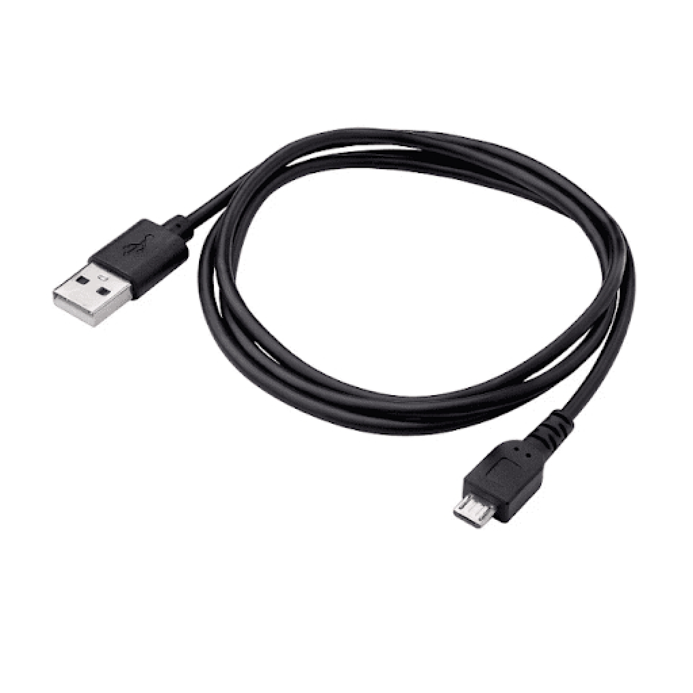

Hardware Requirements¶
This section provides a comprehensive list of the hardware components required to set up and run the ESP32-CSI Tool. The setup described here has been validated by the embedded team at Rayiot Solutions Inc. and ensures stable CSI data capture under various test conditions.
1. ESP32 Development Board¶
We use the ESP32-WROOM-32 DevKit v1 for all CSI-related experiments. The firmware provided by the ESP32-CSI Tool is compatible with this board, and it provides UART connectivity for reliable data transmission to the host PC.
Specifications:¶
- Microcontroller: Tensilica Xtensa LX6 (dual-core, 240 MHz)
- Flash: 4 MB
- RAM: 520 KB SRAM
- Wi-Fi: IEEE 802.11 b/g/n
- UART, SPI, I2C, ADC interfaces
- USB-to-UART bridge onboard (CP2102 or CH340)
ESP32 DevKit v1:¶

Notes:¶
- Ensure the board is genuine or from a trusted vendor to avoid UART instability.
- Boards with CP2102 USB chips tend to offer better serial stability.
2. USB Cable (Micro-USB)¶
A standard USB-A to Micro-USB cable is used to connect the ESP32 board to the host system. This serves both as a power supply and UART communication interface.
Notes:¶
- Use a data-capable cable (not just a charging cable).
- Cable length should be limited to under 1.5 meters for stability.
Image:¶
¶
3. Host Machine (Laptop or PC)¶
The host machine is used for: - Flashing firmware - Monitoring UART output - Parsing and storing CSI data
Minimum Requirements:¶
- OS: Windows 10, Linux (Ubuntu 20.04+ recommended), or macOS
- RAM: 4 GB or more
- Python 3.8+
- At least 1 free USB port
4. Wi-Fi Router or Access Point¶
An 802.11 b/g/n compatible router is required to generate Wi-Fi traffic for CSI collection. The ESP32 listens to these packets in monitor mode.
Guidelines:¶
- 2.4 GHz only (ESP32 does not support 5 GHz)
- Place ESP32 boards within 2–4 meters of the access point during experiments
- Ensure the network is lightly loaded to avoid interference
Image:¶
5. Power Supply (Optional)¶
If the USB port is not used for power, or if conducting mobile experiments (e.g., from a battery):
Recommended:¶
- 5V, 2A portable power bank
- USB breakout board with external power supply
- Li-ion battery with voltage regulator (for compact embedded systems)
Image:¶

6. Physical Mounts and Fixtures¶
To ensure reproducibility and reduce signal artifacts caused by board movement:
Used:¶
- Tripod stands or custom 3D-printed holders
- Double-sided tape or rubber pads for fixed placement
- Ruler/tape measure for documenting layout distance between devices
Image:¶

7. Optional Accessories¶
| Item | Purpose |
|---|---|
| External Antennas | For improved signal strength and directionality |
| Heat sinks | Prevent overheating during long test sessions |
| Breadboards | For clean prototyping in multipoint sensing setups |
| EMI shields | For signal isolation in noisy environments |
8. Hardware Procurement Checklist¶
Below is the recommended list of hardware components needed for setting up the ESP32-CSI Tool environment. This list can be used for procurement, budgeting, or internal tracking.
| Item | Quantity | Specification / Model | Preferred Vendor | Approx. Cost (INR) | Notes |
|---|---|---|---|---|---|
| ESP32 DevKit v1 | 2 | ESP32-WROOM-32, CP2102/CH340 | Mouser, Robu.in | 350 – 500 | Minimum 2 units for TX/RX |
| USB-A to Micro-USB | 2 | Data-capable, <1.5 m length | Amazon, local electronics | 50 – 100 | Must support power + UART |
| Wi-Fi Router | 1 | 2.4 GHz, 802.11 b/g/n | TP-Link, D-Link | 1000 – 1500 | Basic router sufficient |
| Power Bank | 1 | 5V / 2A, 5000–10000 mAh | Mi, Realme, Ambrane | 600 – 1200 | Optional – for mobile tests |
| Tripod/Stand | 2 | Adjustable / table mount | Amazon | 300 – 500 | For stable sensor placement |
| External Antenna | Optional | SMA Antenna (if board supports) | Robu.in, AliExpress | 200 – 400 | Needed for WROVER or IPEX |
| Breadboard | Optional | Full-size or mini | Local electronics | 100 | Useful for compact setup |
| Heat Sinks | Optional | Adhesive copper/aluminum | Amazon, Robu.in | 100 – 200 | For long-duration testing |
Download as CSV: Hardware Procurement Checklist (CSV)
Summary¶
The hardware listed above is sufficient to fully deploy and evaluate the ESP32-CSI Tool in a variety of environments — ranging from lab setups to field trials. Proper handling and setup of components is critical to ensure stable and reproducible CSI data across different use cases.